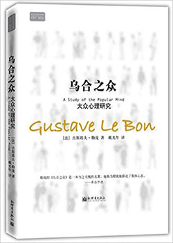
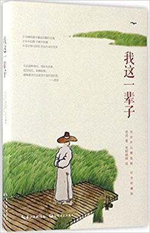

当前位置：首页 > 读书活动
-

乌合之众：大众心理研究 平装 ——2010年1月1日
古斯塔夫·勒庞（Gustave Le Bon）(作者)，戴光年（译者）简介：
《乌合之众：大众心理研究》是解析群体心理的经典名著，虽然是一部学术性著作，但语言生动流畅，分析鞭辟入里，入木三分。因此，《乌合之众》一经问世，便广受欢迎，已被译成十几种语。《乌合之众：大众心理研究》颠覆了人们通常对群体的认识，将群体的特点剖析得淋漓尽致，让人先是惊异，后是佩服。
▼阅读更多 -

我这一辈子 平装 ——2017年4月1日
老舍 (作者简介：
《我这一辈子》选取了老舍先生的一些经典散文和中短篇作品。这些作品多取材于人们的日常生活，通过平凡的场景反映普遍的社会冲突，挖掘对人民生存、命运的思考。这些文章或描写城市平民的生活轨迹，或书写知识分子的生活趣事，或描摹各地的风土人情，其作品充满生活情趣，其文笔细致入微，极尽渲染之笔触，更贯穿着老舍先生一贯的幽默风格，让人从轻快诙谐之中体味人生哲思。